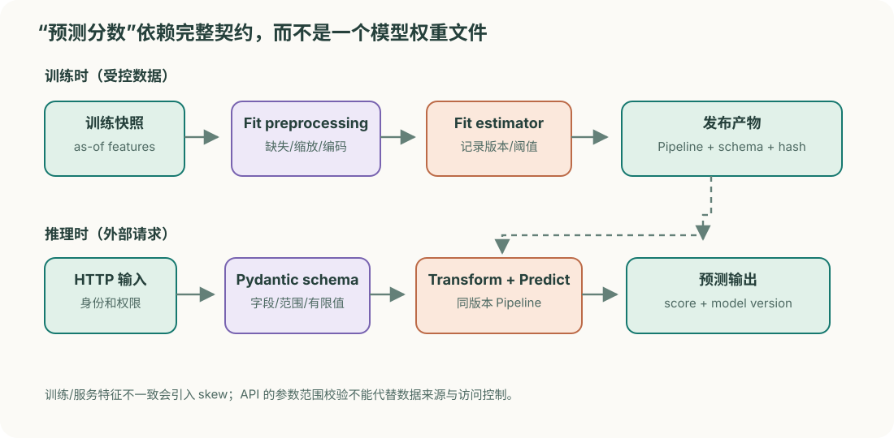
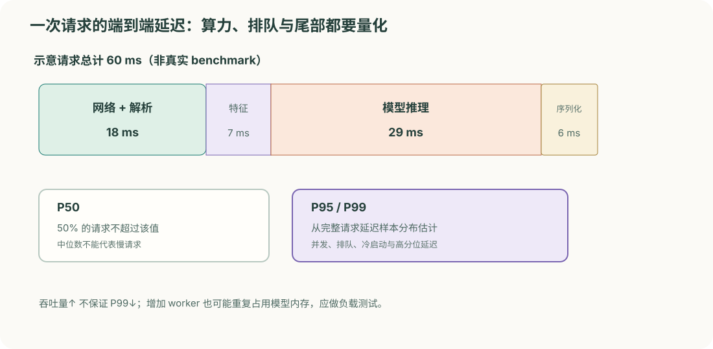
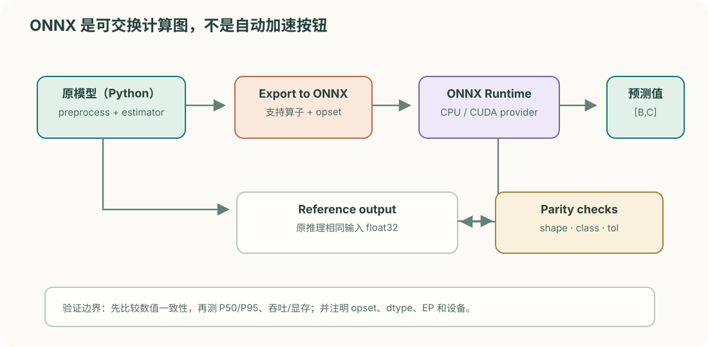
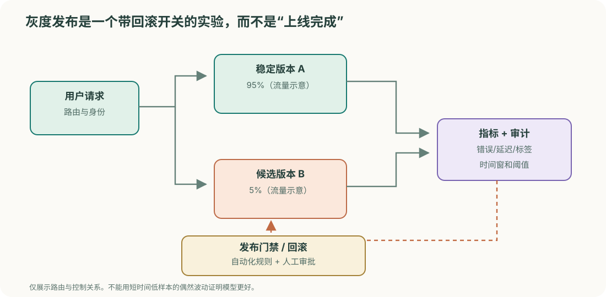
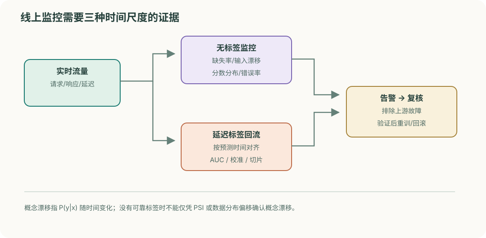

模型部署与服务化：FastAPI、ONNX、Docker 与监控
把训练成功的模型变成可定义输入、可验证输出、可控制延迟与可回滚的系统。从 API 和数值等价，到容器、版本、金丝雀与监控。
01 · 模型服务先要定义输入输出契约
训练完成后保存模型权重并不能保证上线正确：字段顺序、缺失值、类别编码、时间戳、单位或正类标签的变化，都可能让服务返回看似正常的数值。一个可交付的模型服务要版本化预处理 + estimator + 输入 schema + 阈值 + 依赖 + 产物完整性，而不仅是一个孤立模型文件。

API 要明确字段名称、类型、范围、单位、缺失策略、批大小、超时、返回概率所对应的类别、模型版本与错误码。Pydantic 能验证结构，却无法证明特征代表的业务意义仍与训练时一致。类别未见过、特征历史窗口变化和训练服务 skew 仍需单独监控。
02 · FastAPI、Pydantic 与启动生命周期
FastAPI 能识别 Pydantic 请求体并返回结构验证错误；资源加载应使用 lifespan 生命周期。async 不会自动加速 CPU 推理，把耗时的同步模型放进事件循环反而可能阻塞其他请求。本例故意使用同步 def 路由，由服务器调度工作线程；GPU 的并发、队列与批处理需要另行设计。
from contextlib import asynccontextmanager
import numpy as np
from fastapi import FastAPI
from fastapi.testclient import TestClient
from pydantic import BaseModel, Field
from sklearn.linear_model import LogisticRegression
X = np.array([[-2, -1], [-1, -2], [-1, 0], [1, 1], [2, 1], [1, 2]], dtype=float)
y = [0, 0, 0, 1, 1, 1]
model = LogisticRegression(random_state=27).fit(X, y)
@asynccontextmanager
async def lifespan(app: FastAPI):
app.state.model = model
yield
app.state.model = None
app = FastAPI(lifespan=lifespan)
class Request(BaseModel):
feature_a: float = Field(ge=-10, le=10, allow_inf_nan=False)
feature_b: float = Field(ge=-10, le=10, allow_inf_nan=False)
@app.get("/ready")
def ready():
return {"ready": app.state.model is not None}
@app.post("/predict")
def predict(request: Request):
x = np.array([[request.feature_a, request.feature_b]])
probability = float(app.state.model.predict_proba(x)[0, 1])
return {"positive_probability": probability, "model_version": "demo-v1"}
with TestClient(app) as client:
assert client.get("/ready").json()["ready"] is True
result = client.post("/predict", json={"feature_a": 1.0, "feature_b": 1.5})
assert result.status_code == 200
assert 0 <= result.json()["positive_probability"] <= 1
assert client.post("/predict", json={"feature_a": 99, "feature_b": 0}).status_code == 422
print(result.json())这只是可单元测试的内存演示，不是可以公开访问的生产服务：没有认证、速率限制、审计或可信模型加载。liveness 与 readiness 应区分；多个 worker 进程通常会重复加载内存中的模型。服务从不应相信客户端传来的模型文件路径。
03 · P95 延迟与并发吞吐不能相互替代
端到端时间包含网络、排队、特征查询、模型计算与响应序列化。单次在 Notebook 中调用 predict() 的耗时，既不包含请求队列，也不能反映慢请求。应同时测量 P50/P95/P99、QPS、峰值内存、错误率、GPU 利用率与冷启动。

import numpy as np
# 人工造的延迟样本；不是在服务器上测得的真实结果
latencies_ms = np.array([35, 37, 38, 40, 41, 43, 44, 47, 49, 51,
56, 59, 63, 67, 75, 84, 96, 115, 145, 190], dtype=float)
p50, p95, p99 = np.quantile(latencies_ms, [0.50, 0.95, 0.99])
assert p50 < p95 < p99
print("synthetic P50/P95/P99:", round(p50, 1), round(p95, 1), round(p99, 1))注意，总延迟 P95 不等于组件 P95 之和，分位数在不同请求间一般不可直接线性组合。动态批处理可能提高吞吐，但会增加攒批等待时间；worker 增加也可能导致模型多份驻留内存，因此优化必须基于目标硬件和负载。
04 · 工件安全、复现实验与模型版本
部署的一组文件至少包含模型 Pipeline、输入 schema、决策阈值、依赖版本、训练时间窗、代码 SHA、实验指标、工件哈希与回滚版本。使用 joblib、pickle 或兼容反序列化会带来代码执行风险，不能加载不可信来源；scikit-learn 官方文档对 skops.io 给出了更可审查的选择。
| 资产 | 需要固定 | 出错影响 |
|---|---|---|
| 模型 + Pipeline | 拟合后的 scaler、encoder、estimators | 同一输入可能被变换为不同值 |
| 输入 schema | 字段、类别顺序、单位、有效范围 | 静默误判或正负类互换 |
| Manifest | 代码、数据、依赖、指标、hash | 无法定位、复现与回滚 |
| 决策规则 | 阈值、成本函数、生效版本 | 概率相同但业务动作不同 |
序列化对象的跨版本载入不一定可靠。任何发布工件都应在其受控运行环境中 smoke-test，核对数值与类别索引，避免仅凭文件名推断内容可信。
05 · ONNX：先检验输出一致性再谈加速
ONNX 将支持的模型算子转换为可交换计算图，ONNX Runtime 依照所选 Execution Provider 推理。它不是“把模型转换一次就快 3 倍”的保证。真正可发布的转换应检查 opset、输入 dtype/shape、类别顺序、数值容差，并在目标硬件上比较延迟与成本。

import numpy as np
from sklearn.datasets import make_classification
from sklearn.linear_model import LogisticRegression
from skl2onnx import to_onnx
import onnxruntime as ort
X, y = make_classification(n_samples=80, n_features=4, n_informative=3,
n_redundant=0, random_state=27)
X = X.astype(np.float32)
model = LogisticRegression(random_state=27, max_iter=300).fit(X, y)
onnx_model = to_onnx(model, X[:1],
options={id(model): {"zipmap": False}}, target_opset=15)
session = ort.InferenceSession(onnx_model.SerializeToString(),
providers=["CPUExecutionProvider"])
labels, probabilities = session.run(None, {session.get_inputs()[0].name: X[:12]})
reference = model.predict_proba(X[:12])
np.testing.assert_allclose(probabilities, reference, rtol=1e-4, atol=1e-5)
np.testing.assert_array_equal(labels, model.predict(X[:12]))
print("ONNX parity:", probabilities.shape)这个实验需要 skl2onnx、onnx 和 onnxruntime。它只覆盖普通 LogisticRegression，不能证明自定义 sklearn Transformer、图像模型或 LLM 均能被等价转换；复杂流水线要逐算子检查。
06 · 容器封装、权限与启动探针
Docker 镜像将应用、Python 环境及其依赖放到可分发容器中，但不自动提供资源隔离、供应链安全或模型可信性。生产要锁定基础镜像 digest、依赖哈希、模型校验和健康/就绪探针，以非 root 用户运行；模型工件应来自受信任构建渠道。
FROM python:3.12-slim WORKDIR /srv RUN useradd --system --uid 10001 appuser COPY requirements.txt ./ RUN pip install --no-cache-dir -r requirements.txt COPY app.py ./app.py COPY trusted-model.joblib ./trusted-model.joblib USER appuser EXPOSE 8000 CMD ["uvicorn", "app:app", "--host", "0.0.0.0", "--port", "8000"]
上面的 Dockerfile 是需要配套服务源码与依赖清单的示意，不是已构建并扫描的发布镜像。还需要设置最小权限、只读文件系统、密钥管理、网络出站规则、内存/CPU 限额、日志去敏和镜像漏洞扫描。readiness 应确认模型和必要依赖可用；liveness 不应因为短暂后端压力就频繁重启全部 worker。
07 · 金丝雀灰度与回滚门禁
模型变更可能影响输入分布、输出概率与服务时延。常见做法是保持旧版本 A 稳定，将一小部分流量转给候选 B，观察错误、超时、P95/99、预测分布和较晚出现的业务结果。示意的 95/5 流量比例并不是统计显著性保证，也不自动构成严格随机试验。

def release_gate(n, error_rate, p95_ms, baseline_p95_ms):
# 仅供演示的规则数值：生产需按业务风险与统计功效设计
if n < 1000:
return "observe"
if error_rate > 0.01 or p95_ms > baseline_p95_ms * 1.25:
return "rollback-review"
return "human-approval"
assert release_gate(20, 0.0, 40, 40) == "observe"
assert release_gate(2000, 0.03, 42, 40) == "rollback-review"
assert release_gate(2000, 0.0, 42, 40) == "human-approval"
print("rollback decision rules verified")真正的发布系统还需定义变更审批、最短观测窗口、重复请求一致路由、金丝雀分层、人工兜底和前一稳定工件的恢复流程。延迟数值或小批次早期标签不能代替完整的上线验证。
08 · 漂移、延迟标签与模型效果
线上监控要拆成两类：实时无标签指标（API 错误率、字段缺失率、特征分布、输出概率、资源和延迟）与等待实际标签成熟后的指标（召回、校准、业务结果、分组失败率）。输入分布变化 P(X) 不等于条件分布 P(Y|X) 改变。发现漂移应检查上游版本与数据含义，再判断是否影响效果。

例如预测未来 7 天购买意向的服务，当天还不知道未来完整 7 天结果，不能把未成熟标签记为负类。日志需要通过预测 ID、模型版本与发生时间和标签成熟时间关联，且注意是否只对部分用户收集到了标签，从而产生选择偏差。
09 · 发布前检查与来源
- 事实完整性：同输入的离线/在线预测一致，模型和预处理版本固定，工件来源及校验和可追溯。
- 安全：认证鉴权、限流、Pydantic 输入验证、无恶意反序列化、最小权限及日志脱敏。
- 性能：在目标 CPU/GPU 与真实并发下实测 QPS、P50/P95/P99、成本和峰值内存，不引用未经复现的通用加速倍数。
- 模型质量：验证集完成阈值/校准选择，测试集只最终报告，线上标签按成熟时间对齐。
- 发布：灰度、告警、审批、版本固定、回滚演练和故障复盘。
可上线系统不只是“能够返回一个数值”，而是能回答：这次请求读取了什么数据、运行了哪个模型、为何给出这个分数、出错时怎样恢复。
官方文档、版本约束与证据边界
Python 示例使用小型合成数据与 CPU；Dockerfile 未构建、生产服务未部署、延迟与门禁数值为示意，不能充当线上指标。API/ONNX 的具体行为应结合依赖锁文件与运行环境验证。